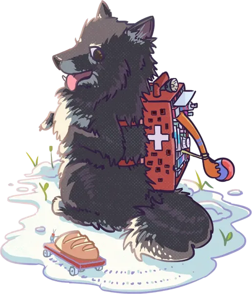

Eine unterdurchschnittlich kleine Katze mit nur einem Hauch der göttlichen Präsenz größerer Katzen, so an Käfer gewöhnt, dass ihre bösen Krallen meist eingezogen bleiben …
Kann einen Brocken tragen.
Gunst
Vorrat · S. 176
- Fellpflege: 2 Aufgaben
- Verspielte Jagd: 1 Aufgabe, 1 Markierung Schlitzen-Schaden
- Einfaches Füttern: 3 Fleisch-Bröckchen
- Luxus-Füttern: 1 Fleisch-Mahlzeit
Gigafertigkeiten
Rang 3: GigaschleichenRang 3: GigajagenRang 2: GigaschlitzenRang 2: Gigatanzen
Aura
Kampflustig: Härte-Abzug −1 bei Rauferei-Aktionen.
Besonderer Vorteil
Raubtierinstinkt: Bei jeder Montage ein freies Bröckchen: „Fleischiges Geschenk“ oder „Verdächtiger Knochen“.